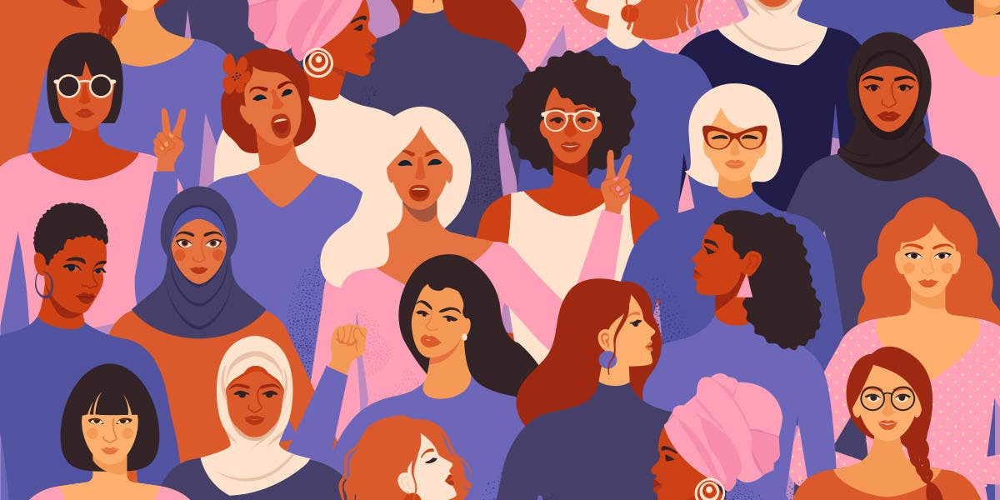

Să încercăm un exercițiu simplu – dacă ar fi ca o femeie să conducă Amazon, vor dispărea oare condițiile inumane în centrele de distribuție ale companiei? Dacă ar fi ca o femeie sa fie lidera companiei Nike, ar dispărea oare practicile de exploatare din fabricile din Asia? O femeie președintă ar aboli oare complexul industrial militar? NU! O femeie care își propune să schimbe sistemul ajunge rar în aceste poziții de putere. Acesta este motivul pentru care mișcările feministe inițiale abordau sistemul, nedreptățile inerente sistemelor economice, sociale și politice. Incluziunea și diversitatea nu sunt suficiente. Lupta pentru doar incluziune și diversitate încurajează o formă de feminism care, în mare parte, nu amenință și nu schimbă status quo-ul. Iată de ce trebuie să readucem spiritul de radicalitate pe care îl aveau femeile din clasa muncitoare în 1917 și care a împuternicit femeile asuprite din întreaga lume să lupte împotriva structurilor patriarhale care continuă să promoveze rolurile de gen și violența de gen. În propria noastră societate moldovenească, există o diviziune de clasă foarte accentuată între femeile care au privilegiul de a-și alege cariera dorită și femeile care furnizează servicii, astfel oferindu-le șansa celor 0,1% să-și „urmeze visele”. Din păcate, această problemă este rar abordată de vocile politice. Trebuie să privim dincolo de actele de caritate individuale folosite ca tactici politice și să cerem schimbări structurale reale, astfel încât familiile sărace să nu fie nevoite să depindă de donații sporadice de la elite. Trebuie să luptăm împotriva politicilor economice care îndepărtează femeile din propria noastră economie și le împing într-o economie informală precară în străinătate.
|  |